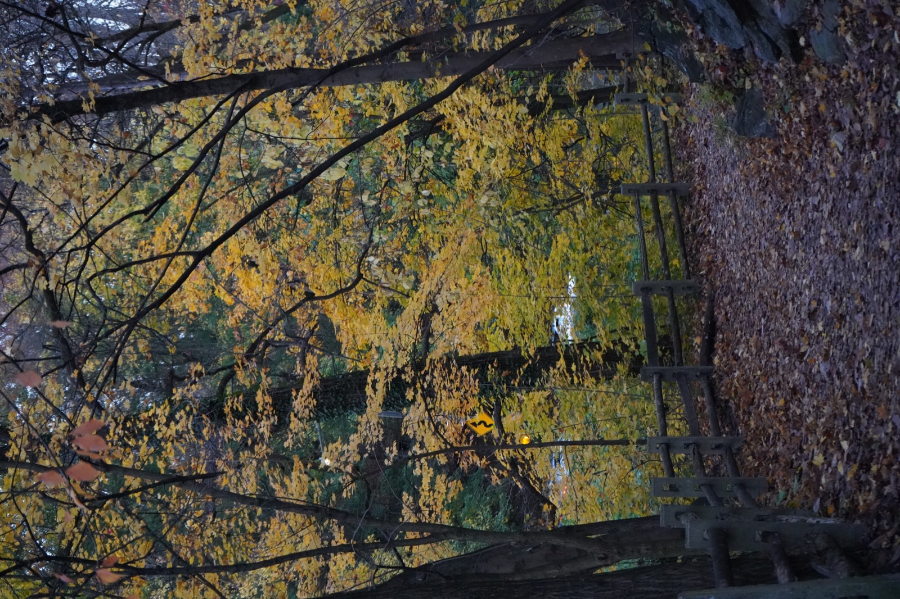
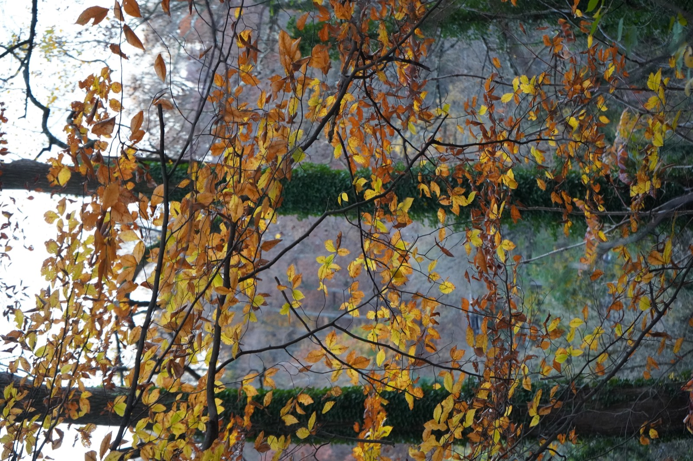
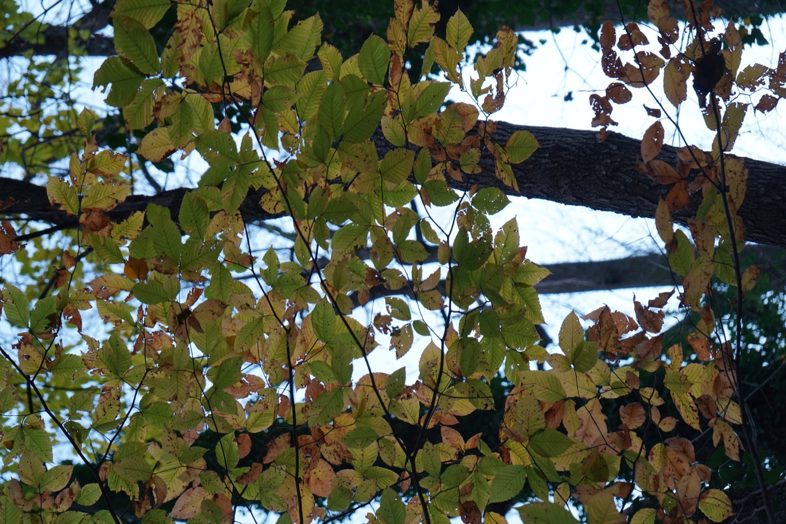
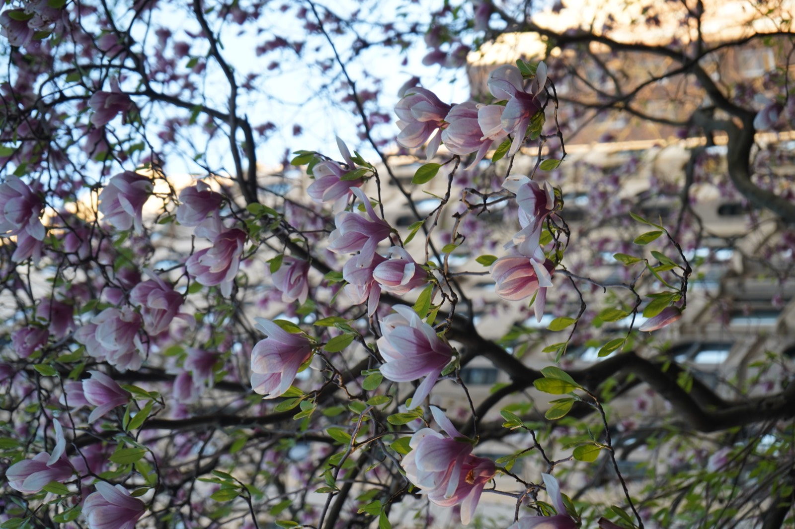
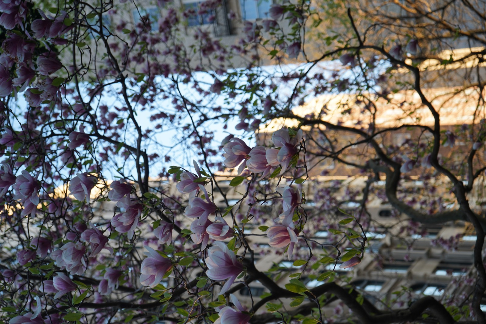

My contribution
Built an independent photography practice focused on nature and everyday life.
I plan, photograph, select, and edit images with attention to composition, color, light, and context.
Personal work
Photography strengthens the same skills I use in research: observing closely, noticing patterns, and finding meaning in everyday details.
Instagram · @betspicssMy contribution
I plan, photograph, select, and edit images with attention to composition, color, light, and context.
What I explore
How visual framing directs attention and shapes the mood and meaning of an ordinary scene.
Outcome
A curated body of work documenting changing seasons, architecture, and everyday environments.
Value to a marketing team
Strengthens visual storytelling, content creation, creative judgment, and the ability to build a consistent brand aesthetic.
Nature and seasonal details
Color, texture, and light across the changing seasons.






Water and quiet landscapes
Scenes shaped by water, distance, and slower observation.
City and architecture
Architecture and city details observed through the natural environment.